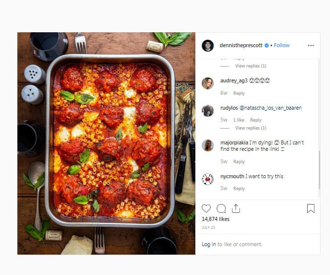
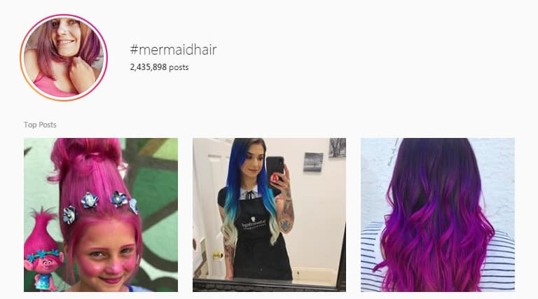

Currently, there are over 25 million companies worldwide using Instagram for business. With that many brands already signed up for a professional profile, it’s safe to say that there must be something valuable about this channel.
Perhaps it’s the fact that more than 200 million users visit at least one brand profile per day on Instagram. Or maybe it’s that Instagram encourages more engagement than any other social media platform, including Facebook.
Whatever the reasoning, Instagram has quickly emerged as the ultimate “home for brands” online, giving companies a unique environment through which to connect with customers. If you haven’t invested in an Instagram business profile yet, then there’s still time to discover the benefits for yourself.
Here’s your guide on how to use Instagram for business.
Step 1: Start with the Perfect Business Profile
Your Instagram profile is the heart and soul of your social media strategy. It’s the first place that your visitors will come to learn about your company, peruse your content, and even get in touch with you. Keeping all of that in mind, it’s worth creating an account that speaks to your target audience.
The first thing you’ll need to do is make sure that you’re using an Instagram business profile, not just a personal account. Business profiles give you access to things like Instagram Insights for your analytics, paid advertising, and more. Although there’s no one-size-fits-all strategy for designing your Instagram profile, here are some of the essentials that you’ll need:
- A stunning profile picture: If you’re running a well-known company, then it makes sense to use your brand logo as your profile picture. For influencers and thought leaders, a smiley picture of you and your team is a good choice.
- Account name: This should probably be the same as your business name, or identical to what you use on other brand profiles to make it easier for customers to find you.
- Username: Again, this should be the same as your business name or your name. Avoid anything that might be difficult to find or spell.
- Bio: This is where you need to explain the nature of your business to the people who visit your profile. Remember to have some fun with your bio by using space formatting techniques and emojis. You can also add relevant hashtags into the mix
- Clickable URL: This is the single link you can have on your Instagram profile. Generally you’ll choose to link to your blog page or website product page.
Notice how @Ted’s Instagram profile is simple, straight to the point, and eye-catching. It uses everything from a professional profile picture to Stories highlights to stand out:
Step 2: Take Advantage Of Instagram Business Profile Features
Learning how to use Instagram for business means knowing how to take advantage of all the unique features you’ll get with your professional profile. For instance, when you sign up for an Instagram business profile, you get:
- Contact information: Upgrade your single link in your bio with a range of ways for users to connect you, such as an email address, phone number, and directions buttons situated at the top of your profile.
- Business category: Give your followers an immediate insight into what you do with a business category. This sits just underneath your username and gives you an extra dose of credibility.
- Call-to-Action buttons. Go into the Edit Profit option on Instagram and click on the Contact Options to add Call to Action buttons that allow followers to book appointments with you, buy tickets, or make reservations right within your profile.
Step 3: Define Your Target Audience
Before you can begin thinking about the kind of content you want to publish on your Instagram business profile, you’ll need to consider who your target audience is. Most of the people on Instagram today are under the age of 35, according to the latest demographic reports. That means that you can expect to reach a relatively young range of consumers.
Of course, to know who you’re connecting with, you’ll need to take a closer look at your own audience analytics and user personas. If you’ve been using other social media platforms before Instagram, use your insights on those channels to find out who follows you on the web. You can also examine your competitors to see the kind of people that follow them. The chances are that you’ll be targeting a similar audience.
Once you understand who your target audience is, think about the kind of content they’ll want to see from your brand. Look at how Lush adheres to their audience, for instance. Not only do they show off their latest products, but they also share information about their most recent CSR initiatives, because they know their customers are interested in protecting animals and the environment.
Step 4: Establish A Posting Schedule
Once you know who your audience is, it’s worth thinking about how often you’ll want them to see content from you. The more you use your Instagram business profile, the more you’ll learn about how frequently your audience get online, which will allow you to customize a schedule to their needs.
Start with general best-practice suggestions to get you started. For instance, Unmetric and Hootsuite offer a range of insights on the best times you should be posting on Instagram based on your industry.
Keep an eye on your Instagram Insights page as you begin to post online and see what times of day you get the most engagement and interactions. Pay attention to any days when your engagement levels go up, and whether you start to lose followers if you post too many times or too few in one week. Finding the right schedule with Instagram for business requires a bit of trial and error. However, you’ll eventually find your sweet spot.
Step 5: Establish A Style For Your Content
If you’ve done your research and looked at some of the most popular accounts on Instagram up to now, you’ll notice that most of them have a consistent aesthetic that they adhere to with every post. This is something that you’ll need going forward as well. Followers on Instagram will expect a certain kind of content from you and your brand, so make sure you identify a theme for your material before you get started. Notice how chef Dennis Prescott has created a style for his Instagram that’s instantly recognizable and eye-catching.

Remember, establishing a consistent style on Instagram for business doesn’t have to mean posting just one kind of content. Aside from your standard photos, you can also put your style into practice on things like Instagram Stories, a feature that appeals to more than 400 million people every day. Stories are a great way to interact with your audience through stickers, polls, gifs, and short video clips. You can even save your stories to your highlight reel to give your business profile more depth.
Other types of content to explore include Instagram video, which spans things like Instagram live for in-the-moment broadcasts, and IGTV for longer video content.
Step 6: Don’t Overlook Your Captions
For the most part, Instagram is a visual platform. That means that your customers are going to notice and appreciate the quality of your photos above all else. However, that doesn’t mean you should be neglecting your captions. Captions on Instagram are a place where you can showcase your unique brand voice and let your personality show through. You can also give meaning to your posts with captions, helping customers to form a connection to your brand.
To create compelling captions, you’ll need to develop a clear voice for your brand. Think about:
- Whether you should use slang or less common language in your posts
- Whether your customers will like the use of emojis
- What kind of personality and grammatical style will appeal to your audience
- How you can add emotion to your content
Check out the posts from Mr.Pokee the hedgehog for instance. The pictures are cute by themselves, but they also rely on some fantastic captions to stand out from the crowd.
Step 7: Use The Right Hashtags
Speaking of making the most out of your Instagram captions, make sure that you’re using hashtags to your advantage too. Instagram hashtags are how you make your online content easier to find. While the captions on Instagram aren’t searchable, the hashtags you use within them will boost your chances of placing your content in front of the right customers.
There are plenty of ways to use hashtags, from making the most of trending tags like #TBT, to tagging your location with geotags. Whatever you do, make sure that you use a wide variety of hashtags to improve your brand reach. You can even create your own branded hashtags like #JustDoIt to boost your chances of earning user-generated content from your target audience.
Don’t forget to take advantage of niche hashtags too. For instance, while there are millions of posts under the tag #hairstyles, you’ll be able to reach a more specific selection of customers if you try to rank for the hashtag #MermaidHair instead:

Step 8: Engage Your Audience
As customers do start to come your way on Instagram, it’s essential to make sure you’re taking advantage of your connections with them. It’s easy to forget this when you’re running a business, but social networks are all about the tribes and communities that you build.
To make your customers fall in love with your company, make sure that you spend as much time as possible interacting with them. Sometimes, this might mean launching an Instagram Live video broadcast where you can respond to common questions with a Q&A session. Other times, it might just mean reaching out to relevant people in your industry by liking their content and leaving comments on their posts. Monitoring industry hashtags will make it easier for you to find the people you need to connect with.
Speaking of likes and comments, don’t be afraid to respond to the comments that people leave on your Instagram photos and videos too. If you can join in on the conversation that your customers want to have with you, then you’ll have a much better chance of earning their loyalty and compassion.
Step 9: Pay To Play
Finally, it’s worth noting that most social media platforms, including Instagram for business, are becoming more reliant on the pay-to-play side of things. In other words, you might need to invest a little bit of cash into your Instagram growth strategy if you want to get ahead of the curve. Instagram Ads allow you to boost the reach of your targeted content using the highly advanced tools available through Facebook, Instagram’s parent company.
The great thing about Instagram for business ads is that there are a wide variety of different formats to choose from, based on what you know about your target audience and the kind of content they like most. From videos and stories to standard carousel posts, a little bit of paid advertising on Instagram could seriously boost your chances of success.
You could even take a unique route to your pay-to-play strategy and consider investing in Instagram influencers instead of standard ads. These are people who can share your content with your target audience and use their existing sway to help you grow online.
Using Instagram For Business
If you haven’t started using Instagram for Business yet, don’t worry. There’s still plenty of time to start building a social strategy that will work for you and your brand. Instagram’s broad appeal and vast user base make it an excellent solution for companies in search of growth, as well as new opportunities to engage with their target audience.
Using the 9 steps above, you should have everything you need to start building a valuable presence for your brand on Instagram in no time.
Don’t forget to stay tuned to SocialFollow for more tips and insights as you go too!


1 Comment